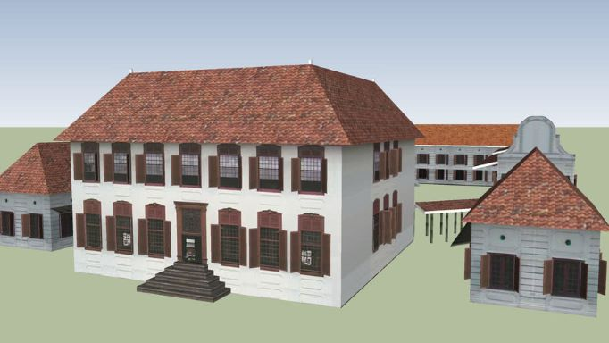
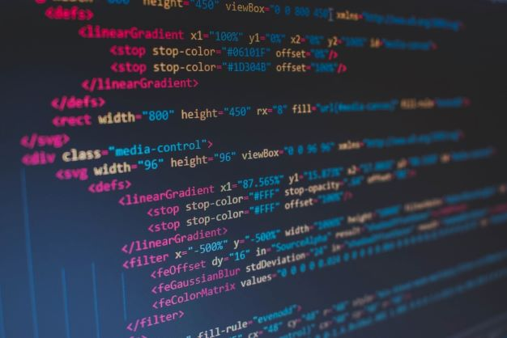
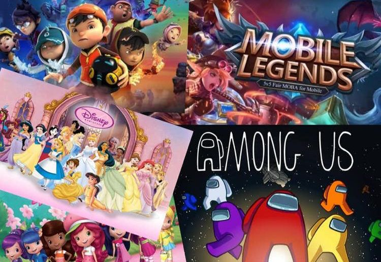

📁 PORTFOLIO
RECORD CENTRE AND ARCHIVE PLANNING AND DESIGNING PROPOSALS
|  |
Next, the proposal that contains planning and functional designing of the record centre and archive are also some of my best projects. For the record centre proposal, where this project requires me to list out and think of effective planning in terms of administration department, staffing, system to use, and more. Meanwhile, the archive proposal required me to plan the archive building, and create the building in 2D and 3D during the Degree. Below is the link that linked to these projects. Record Centre Proposal Archive Building Proposal |
WORKFLOW DOCUMENTATION OF THE MANAGEMENT OF ELECTRONIC RECORDS
|
|
Workflow documentation of the management of electronic records, also the best projects and it teaches me to do the workflow of internal and external transactions of our created company for each department. Not only that, we also have created our own records classification for the created company according to the standard. Below is the report of the workflow documentation of the management of electronic records. Workflow Documentation Report |
WEBSITE DEVELOPMENT
|  |
Another of my best projects is my own creation and publication of a website using markup language which is HTML, Cascading Style Sheet (CSS), and Javascripts. From these projects, I have learned from the basic coding to the specific, which is quite challenging for me as a beginner but this project has got a lot of praise from lectures. There are two website projects that have been done with different categories which are personal websites and business websites. Below is the link to my website that I have created previously. Personal Website Business Website |
INTERACTIVE LEARNING WEBSITES FOR IM222 SUBJECT
|
 |
Have created an interactive learning website for an assignment project and got rewarded by my lecturer, which is Puan Razifah Othman. This portfolio brings me and my team members to the first place on creative ideas on web creation and development for one of Information Management’s courses known as Technical Support Service and Maintenance for Information Agencies (IM222).
|
MENU
| 🏠HOME |
| 👤MY PROFILE |
| 📄EXPERIENCES |
| 🏆AWARDS AND ACHIEVEMENTS |
| 📁PORTFOLIO |
| 📞CONTACT |
Copyright © 2022 Universiti Teknologi MARA (UiTM). All Rights Reserved. About Me
Best view: Chrome 101.0 & 1920x1080
Last update: June 16, 2022